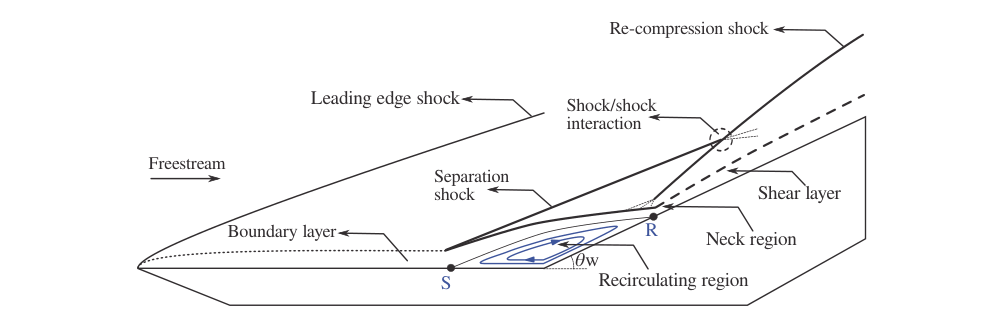
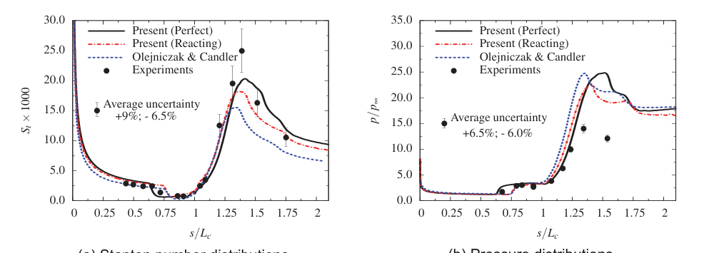
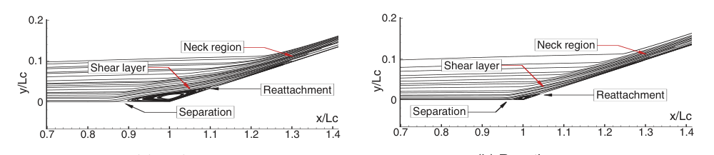
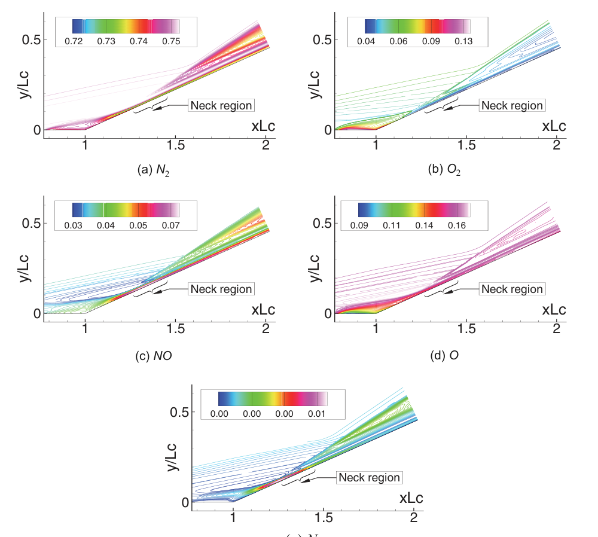

01中文摘要
采用时间精确CFD研究高超声速层流压缩拐角流动。选取总比焓19 MJ/kg和2.8 MJ/kg的高、低焓工况，对应马赫数7.5和9.1、单位雷诺数3.10×10^5和32.2×10^5 m^-1；通过5°–24°的斜坡角获得附着、初始分离和完全分离流动。开展网格无关性研究，评估强干扰区热流与摩阻对网格的敏感性。全程按层流计算，高温效应采用Park双温度模型和有限速率化学处理。与已有定常计算和实验数据进行了批判性比较，强调高温效应对分离与再附的影响。
原始摘要（英文/原文）
Abstract Hypersonic laminar flow past a compression corner has been numerically investigated using time-accurate computational fluid dynamics (CFD) approach. Two flow conditions were considered relevant to high and low enthalpy conditions with a total specific enthalpy of 19MJ/kg and 2·8MJ/kg. The Mach number and unit Reynolds number per metre were 7·5, 9·1 and 3·10 × 10 5 and 32·2 × 10 5 respectively. These free stream conditions provided attached, incipiently separated and fully separated flows for ramp angles between θ w = 5° to 24°. A grid independence study has been carried out to estimate the sensitivity of heat flux and skin friction in the strong interaction regions of the flow. The investigation was carried out assuming the flow to be laminar throughout and high temperature effects such as thermal and chemical nonequilibrium are studied using Park’s two temperature model with finite rate chemistry. A critical comparison has been made with existing steady state computational and experimental data and the study has highlighted the importance of high temperature effects on the flow separation and reattachment.
02阅读说明
数值模拟（CFD）论文，兼与实验及他人稳态计算对比。材料为 30 页带页码全文（PDF p1–30，刊页 27–56）与 16 条图件清单（图 2、图 3、图 11 未收录）；图 1、4–10、12–19 与表 1–5 可读。表 1–5 数值完整；公式 (1)–(3) 的文本层只有零散符号，已按 PDF p10–p11 回核补齐 St、h_r、c_f 与 τ_w 的定义式。全文未截断，参考文献与结论完整。提取口径：定量值优先取表 1–5 与正文明确数字，图件仅用于定性/趋势判断。 文章类型：期刊
03一句话核心与三句话摘要
对 19 与 2.8 MJ/kg 层流压缩拐角做双温非平衡 CFD：高温效应缩小分离泡，但峰值热流仍低于实验。
- 高焓压缩拐角缺乏系统的实验—计算对比，Mallinson 的实验结论认为高温效应不显著，本文重新检验这一点。 AI概括
- 用 Eilmer-3 与 Park 双温五组分有限速率化学，在 B 工况 θw=24°/18°/16°、G 工况 θw=18°/10° 下计算，并与 Mallinson 实验及 Olejniczak & Candler 稳态解对比。 AI概括
- 反应气体使分离点后移、再附点前移、分离泡缩小，与 Mallinson 结论相反；斜面上峰值热流与压力仍未被完全复现。 AI概括
04核心内容清单
| 要点 | 类型 | 重要性 | 原文依据 | 属性 |
|---|---|---|---|---|
| 研究对象为 85 mm 平板 + 95 mm 斜坡的二维压缩拐角，B 工况 24°/18°/16°、G 工况 18°/10°，分别覆盖完全分离、起始分离与附着状态。 | 工况与几何 | A | p5–p6 §2.0，Fig. 3，Table 1 | 原文明确 |
| B 工况 H0=19 MJ/kg、M∞=7.5、Re∞=3.10×10^5 1/m；G 工况 H0=2.83 MJ/kg、M∞=9.1、Re∞=32.2×10^5 1/m，壁温均为 300 K。 | 来流条件 | A | p6 Table 1 | 原文明确 |
| 网格无关性以 St 与 cf 为判据，Δw 是关键：100→20 μm 改变峰热流与分离尺度，流向从 570 加密到 684 而 Δw 不变时结果不变，最终采用 Grid-5（570×102，Δw=20 μm）。 | 数值方法/验证 | A | p9–p12 §3.2，Table 2、Table 3 | 原文明确 |
| 24° 时反应气体分离 s/Lc=0.767、再附 1.198，完全气体为 0.649/1.261，即高温效应使分离泡显著缩小并整体前移。 | 关键结果 | A | p18–p19 §4.2，Table 4，Fig. 11 | 原文明确 |
| 18° 时完全气体 0.878/1.128、反应气体 0.972/1.052；16° 时完全气体 0.950/1.070、反应气体仅起始分离无再附。 | 关键结果 | A | p19 Table 4，Fig. 12 | 原文明确 |
| 所有 CFD 都未复现实验峰值热流位置（s/Lc≈1.37）且低估峰值；反应气体在 24° 斜面上整体更接近实验，Olejniczak & Candler 除拐角附近外严重低估。 | 验证/偏差 | A | p13–p14 §4.1，Fig. 8(a) | 原文明确 |
| 压力在分离区形成平台、再附处达峰；计算普遍高估峰值压力，反应气体再附后压力明显偏低，斜面上出现膨胀—再压缩振荡。 | 关键结果 | A | p14–p15 §4.1，Fig. 8(b)、Fig. 9(b) | 原文明确 |
| G 工况 18° 分离/再附为 0.609/1.247，10° 为 0.968/1.064；18° 回流区内 0.9≤s/Lc≤1.0 的 cf 正小区间指示二次涡。 | 关键结果 | A | p24–p25 §4.5，Table 5，Fig. 20 | 原文明确 |
| G 工况再附后热流峰值计算值不足实验的一半，作者怀疑转捩或三维效应，但实验数据稀疏无法定论。 | 验证/局限 | A | p23 §4.5，Fig. 18(a) | 原文明确 |
| 组分场显示 N2/O2 在颈部与再附激波后离解，NO 在颈部与再附后生成最多；回流区停留时间 280–300 μs， recombination 对热流影响有限。 | 机制/化学 | B | p20–p21 §4.4，Fig. 16 | 原文明确 |
| 热非平衡在剪切层最强（Tv-e/Tv-r≈0.2），近壁分离泡局部趋衡（≈1），无黏区接近热平衡。 | 机制/热非平衡 | B | p22 §4.4，Fig. 17 | 原文明确 |
| 结论明确与 Mallinson“高温效应不显著”相反：高温效应影响分离、再附与回流区。 | 结论 | A | p27 §6.0 | 原文明确 |
05引言：研究问题与领域缺口
（1）问题背景：高超声速压缩拐角是 SWBLI 的典型构型，拐角引起的逆压梯度可导致层流边界层分离，分离泡、分离激波、再附激波与激波/激波干扰直接决定热流与压力载荷（p3–p4，§1.0）。（2）构型特征：平板边界层与前缘激波、拐角斜激波、分离点 S、回流区、再附点 R、颈部区与再附激波依次出现；热流在再附附近出现圆钝峰值，压力先升后平台、再附处快速上升（p3–p4，Fig. 1、Fig. 2）。（3）已有研究：早期 MacCormack、Hung 等用二维 Navier–Stokes 时间精确方法；Holden & Moselle 提供低速焓实验数据；Grumet 等最先用有限速率化学研究二维 SWBLI 高温化学非平衡，Wu 等加入辐射，Grasso & Leone、Furumoto 等做到 18 MJ/kg；Olejniczak & Candler 对 Mallinson 实验做 2.8–19 MJ/kg 热化学非平衡计算（p4–p5）。（4）缺口：多数研究限于低焓或完全气体；高焓下实验与计算仍缺乏系统对比，计算代码与物理化学模型需要严格验证（p5）。（5）目标：以 Mallinson 的 T3 激波风洞实验为对象，用时间精确 CFD 复核高焓效应，给出 24°/18°/16°（B）和 18°/10°（G）下的分离/再附、热流、压力与组分/温度非平衡结果，并判断 Mallinson“高温效应可忽略”的结论是否成立（p5，§2.0）。
06流动条件与几何构型
| 项目 | 数值/描述 | 依据 | 备注 |
|---|---|---|---|
| 试验气体 | 空气 | p6 Table 1 | B、G 工况相同 |
| 总比焓 H0（B） | 19.0 MJ/kg | p6 Table 1 | |
| 静压 p∞（B） | 0.99 kPa | p6 Table 1 | |
| 静温 T∞（B） | 1,160 K | p6 Table 1 | |
| 密度 ρ∞（B） | 2.60×10^-3 kg/m^3 | p6 Table 1 | |
| 速度 u∞（B） | 5,470 m/s | p6 Table 1 | |
| 马赫数 M∞（B） | 7.5 | p6 Table 1 | |
| 比热比 γ∞（B） | 1.45 | p6 Table 1 | |
| 单位雷诺数 Re∞（B） | 3.10×10^5 1/m | p6 Table 1 | 参考长度为 1 m 的单位雷诺数；模型特征长度取 Lc=85 mm |
| 氮气质量分数 X_N2（B） | 0.750 | p6 Table 1 | |
| 氮原子质量分数 X_N（B） | 0.001 | p6 Table 1 | |
| 氧气质量分数 X_O2（B） | 0.060 | p6 Table 1 | |
| 氧原子质量分数 X_O（B） | 0.159 | p6 Table 1 | |
| NO 质量分数 X_NO（B） | 0.030 | p6 Table 1 | |
| 总比焓 H0（G） | 2.83 MJ/kg | p6 Table 1 | 正文 p5 又写 2.86 MJ/kg、摘要写 2.8 MJ/kg，原文前后不一致 |
| 静压 p∞（G） | 0.73 kPa | p6 Table 1 | |
| 静温 T∞（G） | 160 K | p6 Table 1 | |
| 密度 ρ∞（G） | 16.0×10^-3 kg/m^3 | p6 Table 1 | |
| 速度 u∞（G） | 2,280 m/s | p6 Table 1 | |
| 马赫数 M∞（G） | 9.1 | p6 Table 1 | |
| 比热比 γ∞（G） | 1.40 | p6 Table 1 | |
| 单位雷诺数 Re∞（G） | 32.2×10^5 1/m | p6 Table 1 | |
| 氮气质量分数 X_N2（G） | 0.78 | p6 Table 1 | |
| 氧气质量分数 X_O2（G） | 0.22 | p6 Table 1 | |
| X_N、X_O、X_NO（G） | 表中记为“–”（未给出） | p6 Table 1 | |
| 上游平板长度 Lc | 85 mm | p5 §2.0，Fig. 3 | |
| 斜坡长度 | 95 mm | p5 §2.0，Fig. 3 | |
| 斜坡角 θw（B） | 24°、18°、16° | p5 §2.0 | p5 称分别为完全分离、起始分离、附着；p13 又称 24° 与 18° 均为完全分离、16° 为起始分离，原文表述不一致 |
| 斜坡角 θw（G） | 18°、10° | p5 §2.0 | p5 称为完全分离与起始分离 |
| 壁温 Tw | 300 K（冷壁，固定温度） | p8 §3.2 | |
| 维数 | 二维 | p6 §2.0、p8 §3.2 | |
| 前缘 | 尖前缘、零钝度 | p5、p8 | |
| 坐标归一化 | s/Lc，拐角处 s/Lc=1.0 | p5 §2.0 | |
| 计算网格（最终） | Grid-5：570i×102j，Δw=20 μm | p9 Table 2、p12 §3.2 | |
| 时间步与推进 | CFL=0.5，Δt≈1×10^-9 s，达到稳态约 280 μs、约 1×10^6 步 | p8 §3.2、p9 | |
| 来流初始化 | 全域均匀，按 t=0 试验段条件给定；未模拟风洞启动 | p9 §3.2 |
07核心现象与关键参数
| 参数 | 定义 | 数值 | 关系/说明 | 依据 |
|---|---|---|---|---|
| θw | 斜坡角（wedge angle） | 24°、18°、16°（B）；18°、10°（G） | 决定逆压梯度强度与分离状态 | p5 §2.0，Table 1 |
| s/Lc | 以平板长度归一化的壁面坐标 | 拐角 s/Lc=1.0 | 分离点、再附点与峰值位置均以此坐标报告 | p5 §2.0 |
| St | Stanton 数（由式(1)用 qw 与恢复焓 hr 计算） | 图中以 St×1000 显示；量级 0–30 | 表征壁面热流；峰值为再附加热指标 | p9–p10 式(1)、Fig. 6 |
| cf | 局部摩阻系数（式(3)，由壁面剪应力 τw 与来流 ρ∞、u∞ 计算） | 图中以 cf×1000 显示 | cf 过零判定分离与再附 | p11 式(3)、p18 |
| p/p∞ | 壁面静压与来流静压之比 | B 工况 24° 峰值约 25–35；G 工况 18° 峰值约 20 | 压力平台对应分离区，峰值对应再附 | p13–p15、p23–p24 各图 |
| hr | 恢复焓 | 由式(2)计算，具体表达式文本层缺失 | 用于 St 的无量纲化 | p9–p10 |
| qw | 壁面热流，一阶近似 | qw=k(∂T/∂y) | St 的分子 | p9–p10 §3.2 |
| Δw | 壁面第一层网格间距 | 100、50、25、20 μm（Grid-1 至 Grid-6） | 控制峰热流与分离尺度；20 μm 后 St 不再随网格变化 | p9 Table 2、p10–p11 |
| GCI | 网格收敛指数（基于 Richardson 外推） | 分离 2.90×10^-3、再附 4.26×10^-4（Grid-5→6） | 量化网格不确定度 | p12 §3.2，Table 3 |
| Tv-e/Tv-r | 振动—电子温度与平动—转动温度之比 | 剪切层≈0.2；近壁分离泡局部≈1 | 表征热非平衡强度 | p22 §4.4，Fig. 17 |
| Xi | 组分质量分数（N2、O2、NO、O、N） | 来流值见 Table 1；反应区变化见 Fig. 16 | 表征离解/复合与化学非平衡 | p6 Table 1、p20–p21 |
| Lc | 前体平板长度（参考长度） | 85 mm | s/Lc 的参考长度 | p5 §2.0 |
08方法与数据
（1）几何与来流：上游平板 Lc=85 mm、尖前缘，斜坡 95 mm；拐角位于 s/Lc=1；B 工况 H0=19 MJ/kg、M∞=7.5、Re∞=3.10×10^5 1/m；G 工况 H0=2.83 MJ/kg、M∞=9.1、Re∞=32.2×10^5 1/m；壁温固定 300 K，二维计算（p5–p6，Fig. 3，Table 1）。（2）数值方法：Eilmer-3 单元中心有限体积，MUSCL+van Albada 二阶迎风重构，AUSMDV 通量分裂，预估—校正与算子分裂，显式推进，CFL=0.5（p6–p7，§3.1）。（3）气体模型：完全气体时单组分、γ 常数、Sutherland 黏性、k=μCp/Pr、Pr=0.72；非平衡时五组分（N2、O2、NO、O、N），Park 双温模型、23 反应/11 组分机理由五个中性组分实现、忽略电离，Arrhenius 速率、alpha-QSS 积分、每步质量分数重整化，CEA 多项式热力学（至 20,000 K）、Gupta 混合规则、Fick 扩散（p7，§3.1）。（4）网格：16 块节点对接，远上游自由滑移壁以保持前缘边界层；网格无关性用六套网格（100×20 至 684×102，Δw=100→20 μm），以 St 与 cf 为判据，最终选 Grid-5（570×102，Δw=20 μm）；边界层增长因子 1.03，前缘双几何增长率 1.1（p8–p12，Table 2、Table 3）。（5）边界与初始化：斜入口给均匀超声速来流，出口为超声速出口，壁面冷壁 300 K；未模拟激波风洞启动过程，初始场均匀（p8–p9）。（6）验证：以两套不同代码（本文与 Olejniczak & Candler）的解互比作为代码验证，并与实验和纹影/干涉图对比（p13、p26）。
| 项目 | 内容 | 依据 | 备注 |
|---|---|---|---|
| 控制方程 | 二维时间精确可压缩 Navier–Stokes，单元中心有限体积积分形式 | p6 §3.1 | 层流，无湍流模型 |
| 求解器 | Eilmer-3 | p6 §3.1 | |
| 空间重构 | MUSCL 二阶迎风 + van Albada 限制器 | p7 §3.1 | |
| 通量格式 | 无黏通量 AUSMDV；黏性通量用单元顶点平均应力 | p7 §3.1 | |
| 时间推进 | 预估—校正、算子分裂、显式积分，CFL=0.5 | p7 §3.1 | |
| 完全气体模型 | 单组分、γ 常数、Sutherland 黏性、k=μCp/Pr、Pr=0.72 | p7 §3.1 | |
| 化学非平衡模型 | Park 双温、23 反应/11 组分机理简化为五中性组分（N2、O2、NO、O、N），忽略电离 | p7 §3.1 | |
| 化学反应积分 | Arrhenius 速率；alpha-QSS 准稳态积分；每步质量分数重整化保证质量守恒 | p7 §3.1 | |
| 热力学与输运 | CEA 多项式（至 20,000 K）；Gupta 混合规则计算混合黏性与导热；Fick 扩散 | p7 §3.1 | |
| 网格 | 16 块节点对接；六套网格 100×20 至 684×102；边界层增长因子 1.03；前缘双几何 1.1 | p8–p9 §3.2，Table 2 | |
| 边界条件 | 壁面 300 K 无滑移冷壁；斜入口均匀超声速；下游超声速出口；远上游块自由滑移壁 | p8 §3.2，Fig. 4 | |
| 网格无关性判据 | St 与 cf 的分布及分离/再附位置；GCI 基于 Richardson 外推 | p9–p12 §3.2 | |
| 验证方式 | 与 Mallinson 实验、Olejniczak & Candler 稳态计算互比；与纹影/干涉图定性对比 | p13、p26 | |
| 不确定度 | B 24°：St +9%/−6.5%、p +6.5%/−6.0%；B 18°：St +5%/−3.5%；B 16°：St +4.5%/−3.5%；G 18°：St +11%/−7.5%、p ±10%；G 10°：St ±10%、p ±20% | Figs. 8–10、18–19 图内标注 |
09核心推导与公式
原文没有从守恒律出发的解析推导；可提取的核心公式链是：由壁面法向温度梯度求 q_w，由 q_w 与恢复焓 h_r 构造 St，由速度梯度求 τ_w 再构造 c_f，以及 Park 双温五组分有限速率化学与 alpha-QSS 的建模链。式 (1)–(3) 已按 PDF p10–p11 原式回核补齐，但仍属定义与建模链，不是可复现的解析推导。
关键假设
- 流动为二维、定常（用时间精确方法推进到稳态）、层流
- 壁面为 300 K 固定温度冷壁，无滑移
- 完全气体分支：单组分、γ 常数、Pr=0.72
- 非平衡分支：五中性组分，忽略电离，热力学为热完全气体混合物
- 网格无关性仅在完全气体假设下完成
推导过程
文中直接用壁面法向温度梯度的一阶近似给出热流，作为 St 的输入；未给出二阶修正或壁面催化条件。
St 由式 (1) 定义，分母以来流恢复密度与速度、恢复焓与壁焓之差为参考量；恢复焓 hr 由式 (2) 给出。两式已据 PDF p10 原式核对。
cf 由式 (3) 定义，分子为 2τw，分母以来流密度与速度平方为参考；壁面剪应力 τw 取壁面法向速度梯度。已据 PDF p11 原式核对，确认含系数 2。
五组分连续方程 + Park 双温能量松弛 + 23 反应有限速率化学（简化为五中性组分）+ alpha-QSS 积分 + 每步质量分数重整化；热力学用 CEA 多项式，输运用 Gupta 混合规则。原文只给文字描述，未列出反应式、松弛时间与速率常数。
适用边界：该文为定常层流 CFD，网格无关性只在完全气体分支完成；热化学非平衡分支的网格收敛性与壁面催化条件未给出。
10结果：主要发现与关键证据
（1）网格敏感性：分离/再附位置对网格极敏感，Grid-1 分离 s/Lc=0.848、再附 1.112，Grid-5 为 0.645/1.260，Grid-6 为 0.646/1.260；Grid-5→Grid-6 的 GCI 分离 2.90×10^-3、再附 4.26×10^-4；Δw 由 100 μm 降到 20 μm 显著改变峰值热流，流向加密而 Δw 不变时 St 不再变化（p10–p12，Table 3）。（2）B 工况 24°：反应气体分离 s/Lc=0.767、再附 1.198；完全气体 0.649/1.261；反应气体分离泡更接近实验，实验热流峰值位于 s/Lc≈1.37，所有 CFD 均低估峰值热流，但反应气体在斜面上整体更接近实验；压力峰值三者均高估，反应气体再附后压力明显偏低，斜面上出现膨胀—再压缩振荡（p13–p15，Fig. 8，Table 4）。（3）B 工况 18°：完全气体分离 0.878/再附 1.128，反应气体 0.972/1.052；热流呈典型 V 形，反应气体分离泡很小，接近 Mallinson 给出的 15°±1° 起始分离角之后的状态；再附后计算热流高于实验，压力在 s/Lc≈1.2 之后明显高估（p15–p16，Fig. 9）。（4）B 工况 16°：完全气体有很小的分离泡（0.950/1.070），反应气体仅呈起始分离、无再附；反应气体热流 V 形与实验更接近，峰值位置仍偏下游；压力仅完全气体在 s/Lc≈0.875 显示拐点（p16–p17，Fig. 10）。（5）摩阻：24° 时分离与再附处 cf 过零，反应气体回流区负 cf 峰值更大、再附后峰值更高且更靠上游（峰值位置 1.43 对 1.56）；拐角附近存在小幅振荡，作者认为是格式伪影（p17–p19，Fig. 11、Fig. 12）。（6）流线与化学：反应气体颈部区更明显、分离泡更小；N2/O2 在颈部（温度峰值）与再附激波后离解，NO 在颈部与再附后生成最多，回流区停留时间约 280–300 μs， recombination 对热流影响有限（p20–p21，Figs. 13–16）。（7）热非平衡：无黏区接近热平衡；边界层与再附后剪切层中 Tv-e/Tv-r≈0.2，近壁分离泡 0.8≤s/Lc≤1.0 处≈1（p22，Fig. 17）。（8）G 工况：仅用完全气体；18° 分离 0.609、再附 1.247，0.9≤s/Lc≤1.0 出现正 cf 小段，指示逆时针二次涡；10° 分离 0.968、再附 1.064，对应实验起始分离角 10°±2°、理论 9°；再附后热流峰值计算值不足实验的一半，疑为转捩或三维效应（p23–p25，Figs. 18–20，Table 5）。（9）流场可视化：B 工况的边界层厚度、分离/回流区、分离激波、再附激波与剪切层和实验纹影一致；G 工况分离位置计算略偏下游，激波/激波干扰位置也偏下游（p26，Figs. 21–22）。
| 发现 | 证据 | 证据类型 | 强度 | 位置 | 属性 |
|---|---|---|---|---|---|
| 高温化学非平衡使分离泡缩小：24° 分离点由 0.649 后移至 0.767、再附点由 1.261 前移至 1.198；18° 由 0.878/1.128 变为 0.972/1.052；16° 完全气体有小分离泡而反应气体仅起始分离。 | Table 4 的 s/Lc 数值；Fig. 11、Fig. 12 的 cf 过零位置；Fig. 13–15 的流线 | 定量结果 | 强 | p18–p20 §4.2–4.3，Table 4 | 原文明确 |
| CFD 未复现实验峰值热流：实验峰值在 s/Lc≈1.37，所有计算均低估峰值热流，但 24° 反应气体在斜面上整体最接近实验。 | Fig. 8(a) 中实验点、本文完美/反应气体与 Olejniczak & Candler 曲线对比；正文明确给出 1.37 | 验证偏差 | 强 | p13–p14 §4.1，Fig. 8(a) | 原文明确 |
| 压力峰值被高估，反应气体再附后压力明显低于实验；斜面上出现膨胀—再压缩导致的压力振荡。 | Fig. 8(b)、Fig. 9(b) 的压力分布与平台/峰值；正文对膨胀扇反射的解释 | 定量结果/机制 | 中 | p14–p15、p23–p24 | 原文明确 |
| 网格敏感性集中在分离/再附与峰热流：Δw 从 100 μm 降到 20 μm 显著改变结果，Grid-5 后 St 不再变化；分离 GCI 2.90×10^-3、再附 4.26×10^-4。 | Table 2、Table 3；Fig. 6、Fig. 7 | 方法/验证 | 强 | p9–p12 §3.2 | 原文明确 |
| 化学反应集中在颈部与再附激波后：N2、O2 离解，NO 在颈部与再附后生成最多；回流区停留时间 280–300 μs 限制化学重组对热流的影响。 | Fig. 16 的五个组分质量分数等值线；正文对颈部温度峰值与停留时间的说明 | 机制/化学 | 中 | p20–p21 §4.4 | 原文明确 |
| 热非平衡在剪切层最强（Tv-e/Tv-r≈0.2），近壁分离泡局部趋衡（≈1），无黏区接近热平衡。 | Fig. 17 的温度比等值线；正文给出 0.2 与 1 的数值 | 机制/热非平衡 | 中 | p22 §4.4，Fig. 17 | 原文明确 |
| G 工况完全气体计算给出 18° 分离/再附 0.609/1.247、10° 0.968/1.064；10° 的结果与实验起始分离角 10°±2°、理论 9° 一致。 | Table 5；Fig. 20 的 cf 过零；正文引用 Mallinson 的实验角 | 定量结果 | 强 | p24–p25 §4.5，Table 5 | 原文明确 |
| G 工况再附后热流峰值计算值不足实验的一半，作者怀疑转捩或三维效应，但实验数据稀疏无法定论。 | Fig. 18(a) 的峰值对比与不确定度带；正文明确“less by more than a factor of two” | 验证偏差/局限 | 中 | p23 §4.5，Fig. 18(a) | 原文明确 |
| 分离/再附激波、剪切层与激波/激波干扰的整体流场结构与实验纹影/干涉图一致，说明分离尺度与位置被合理捕捉。 | Fig. 21（B 24°）、Fig. 22（G 18°）的实验与密度梯度对比 | 流场验证 | 中 | p26 §5.0 | 原文明确 |
| 16° 反应气体呈典型 V 形热流分布且无再附，支持 Mallinson 的起始分离角 16°±1°。 | Fig. 10(a)；Table 4 中 16° 反应气体标为 incipient separation；正文引用 16°±1° | 结论支持 | 中 | p16–p17、p19 | 原文明确 |
11机制解释与论证链
压缩拐角逆压梯度使边界层分离，分离剪切层在再附处被压缩变薄形成颈部，温度梯度变陡而产生热流峰值；再附激波与分离激波相交产生滑移线与膨胀扇，膨胀扇在壁面与再压缩激波之间反射，造成再附后压力振荡。高焓时颈部与再附激波后温度最高，N2/O2 吸热离解、NO 生成，压力降低并改变再压缩激波角，使反应气体的分离泡小于完全气体；但回流区停留时间仅约 280–300 μs，化学重组对壁面热流的直接贡献有限。计算峰值热流仍低于实验，作者提出分离剪切层转捩或实验三维效应两种可能，但未给出判决性证据（p14、p20–p22）。
12讨论：结论、贡献与局限
（1）机制链：高温使颈部与再附激波后发生吸热离解，压力降低并改变再压缩激波角，从而使反应气体的分离泡小于完全气体；这与 Furumoto 等对 18 MJ/kg 楔/平板干扰的观察一致（p21）。（2）峰值热流机制：再附时剪切层变薄、温度梯度变陡形成热流峰值；反应气体颈部更强、峰值 cf 更高，但计算峰值热流仍低于实验，作者提出两种可能——分离剪切层发生转捩，或实验受三维效应影响；并引用 Rudy 等三维计算更接近 Holden & Moselle 实验、Lee & Lewis 二维也吻合的对立结果（p14）。（3）压力振荡：斜面下游的膨胀—再压缩来自激波/激波干扰产生的膨胀扇在壁面与再压缩激波之间反射，计算与实验在再附后压力水平上分歧明显（p15、p23）。（4）与 Mallinson 的分歧：Mallinson 由实验判断高温效应可忽略，本文计算显示分离、再附与回流区均受高温效应影响；但作者也承认实验数据稀疏、不确定度较大（B 工况 St 约 +9%/−6.5%，G 工况 18° 约 +11%/−7.5%）（p13、p18、p27）。（5）验证边界：两套代码的互比只能算代码验证，不能替代实验确认；网格无关性仅在完全气体下完成，化学非平衡可能带来小的定量偏移（p8–p9、p13）。（6）未决问题：峰热流位置与量值、再附后压力、G 工况是否转捩、三维效应与侧壁影响，均未解决；作者结论是现有时间精确解与最细网格稳态解都不足以完整描述高焓 SWBLI（p27）。
作者结论
作者结论有三层：（1）CFD 能合理预测拐角分离区的层流 SWBLI，分离、再附、回流区与激波结构与实验总体一致；（2）斜面上峰值热流与压力的位置和量值、以及再附后的分布仍有显著偏差，24° 和 18° 的计算热流在再附后明显高于实验，G 工况峰值不足实验一半；（3）高温效应确实影响分离、再附与回流区，与 Mallinson 基于实验得出的“高温效应不显著”相反。作者进一步指出，本文时间精确解与 Olejniczak & Candler 最细网格稳态解都不能完整描述含高温效应的高焓 SWBLI，仍需计算与实验共同努力（p27）。
主要贡献
- 给出 B、G 两个总焓、五个斜坡角的层流压缩拐角时间精确 CFD 数据集，并与 Mallinson 实验和 Olejniczak & Candler 稳态解系统对比。
- 量化了 Δw 与流向网格对 St、cf、分离/再附位置的影响，给出 GCI，明确 Grid-5（570×102，Δw=20 μm）为本文收敛网格。
- 首次（就本文材料范围）系统比较完全气体与 Park 双温五组分反应气体在 24°/18°/16° 下的分离泡、cf、热流与压力差异。
- 给出 24° 下的组分质量分数与 Tv-e/Tv-r 场，指出化学反应集中于颈部与再附激波后。
- 对 Mallinson 的高温效应结论提出反证，并指出峰热流不匹配可能来自转捩或三维效应。
局限与未解决问题
作者承认的局限：（1）全程层流假设，未考虑分离剪切层转捩；（2）二维计算，实验虽在中展向近似二维，但侧壁/三维效应不能排除；（3）实验数据在斜面上稀疏、不确定度较大（B 24° St 约 +9%/−6.5%，G 18° 约 +11%/−7.5%）；（4）网格无关性只在完全气体下完成，化学非平衡可能带来小的定量偏移；（5）未模拟激波风洞启动过程，初始场均匀；（6）Olejniczak & Candler 数据由文献曲线数字化，可能引入误差。AI 识别的局限：（7）化学模型仅五个中性组分、忽略电离，在 19 MJ/kg、T∞=1160 K 下可能不足；（8）壁温固定 300 K，未做壁温/催化敏感性；（9）G 工况只用完全气体，未与反应气体对照；（10）式 (1)–(3) 主体缺失，St/cf 的归一化无法核验；（11）未给出 y+、残差历史与统计稳态判据；（12）图 2、图 3、图 11 的图件未进入清单，相关曲线只能依据正文描述。
13对高速流动与工程的意义
对高超声速分离流动的意义：（1）可用于评估常用完全气体假设在高焓压缩拐角中的误差量级——分离泡尺度可差 10%–20% 的 Lc，且方向是“完全气体高估分离”；（2）提示热防护设计不能只用完全气体 CFD 预测再附峰值热流，因为化学非平衡会改变分离泡与颈部结构；（3）给出了一个可复用的验证链：网格/Δw 敏感性 + 两套代码互比 + 实验热流/压力 + 流场可视化。不能回答的问题：转捩起始与位置、三维/侧壁效应、壁面催化与辐射、电离、真实飞行条件下的壁温与激波风洞非均匀性。对进气道/隔离器、叶栅、再入气动热的启示主要在于“分离泡对化学模型敏感、峰热流对网格与转捩敏感”，但本文构型为简单压缩拐角，外推到复杂构型需谨慎（AI推断）。
14核心图件




15可引用原文素材
| 原文短句 | 可支持的观点 | 位置 | 使用建议 |
|---|---|---|---|
| “high temperature effects were not significant” | Mallinson 基于实验的原始结论，是本文要重新检验的对象 | p5 §1.0 | 引言中作为被反驳的观点引用，注意标明是 Mallinson 的结论 |
| “the reacting gas prediction appears to be closer to experimental values” | 24° 下反应气体分离泡更接近实验 | p14 §4.1 | 支持“高温效应不可忽略”的核心句 |
| “none of the CFD data matches the experimental peak heat flux location” | 峰值热流位置普遍未复现 | p14 §4.1 | 用于讨论 CFD 验证不足，不宜单独作为定量结论 |
| “extremely sensitive to grid refinement” | 分离位置对网格极敏感，必须做网格无关性 | p10 §3.2 | 方法学引用，说明 Δw 与分离区分辨率的重要性 |
| “the scale of the separated region can be seen to reduce with chemical reactions” | 化学反应缩小分离区，是流线图的直接观察 | p20 §4.3 | 与 Table 4 的定量值配合引用 |
| “a transition in the separated shear layer might have occurred” | 峰热流低估的可能解释之一是转捩 | p14 §4.1 | 引用时必须说明这是作者提出的可能性，未被证实 |
| “separation, reattachment and recirculation regions are affected by high temperature effects” | 全文中心结论，与 Mallinson 相反 | p27 §6.0 | 结论段核心引文 |
| “CFD can reasonably predict the laminar SWBLI in the separated region” | 作者对 CFD 能力的正面评价，但限定在分离区 | p27 §6.0 | 用于平衡引用，避免只强调偏差 |
16最终核验
| 核验项 | 结论 |
|---|---|
| 仅基于全文 | 是。仅使用 bundle 中带页码全文（PDF p1–30）与图件清单；未引入外部文献、外部数据或教科书推导。 |
| A 级要点有依据 | 是。A 级要点均给页码、表号或图号：来流条件取 Table 1，网格取 Table 2–3，分离/再附取 Table 4–5，峰热流取 Fig. 8 与 p14 正文。 |
| 属性标注 | 是。three_sentence、core_points、findings 均带 attr 字段；区分【原文明确】【AI概括】【AI推断】，机制段与 significance 中的外推均按 AI 推断表述。 |
| 覆盖范围 | IMRaD 四项、conditions、key_parameters、methods、derivation、mechanism、findings、conclusions、limits、significance、quotes、figures、verification 均已填写。公式 (1)–(3) 主体缺失，已在 read_note、derivation、limits 与 open_questions 中说明。 |
| 无编造 | 未编造页码、图号、公式或数据。所有数值均来自 Table 1–5、图内标注或正文明确语句；无法确认处写“受限于材料，无法确认”或“原文未提及”。quote 均为原文短句，未改写。 |
需回原文确认
- G 工况总焓在摘要写 2.8 MJ/kg、正文写 2.86 MJ/kg、Table 1 写 2.83 MJ/kg，哪一个是计算所用值？
- 图 8–10 的实验峰值热流与 CFD 差异究竟由转捩还是三维效应造成，原文未定论。
- 最终网格 570×102、Δw=20 μm 的 y+ 或壁面分辨率指标未给出，如何评价壁面热流分辨率？
- 五组分化学在 19 MJ/kg、T∞=1160 K 下忽略电离，是否会影响分离泡尺度与峰热流？
- 反应气体在 18° 再附后压力显著低于实验（p15），原文归因于激波角变化/转捩/三维，均未定量验证。
- G 工况压力平台：计算 p/p∞≈6.3、实验≈4.0，正文却称实验值“reduced by more than 60%”，与数值不符，需核对原文。
- 计算是否真正达到统计稳态（280 μs、约 1×10^6 步）未给残差判据，时间推进的收敛性无法确认。
17关联文献
依据标签、板块、构型与作者脉络自动关联，可据此追踪同一问题的前序与后续工作。
18引用格式
选择期刊风格后复制；出处保留原刊名。BibTeX 可直接用于 LaTeX。
引用格式
Deepak, N. R., Gai, S. L. & Neely, A. J. 2013 A computational investigation of laminar shock/wave boundary layer interactions. The Aeronautical Journal 117 (1187), 27–56. https://doi.org/10.1017/S0001924000007740
PDF上传 PDF 并更新本页
本页缺少全文、摘要或图件时，可在浏览器本地补入 PDF。解析完全在本机完成，不上传网络；完成后会更新本页的 PDF 打开链接、原摘要、IMRaD 机器抽取、关键句与含图页面。复杂的公式语义与中文深度解读仍以原文和既有精读记录为准。